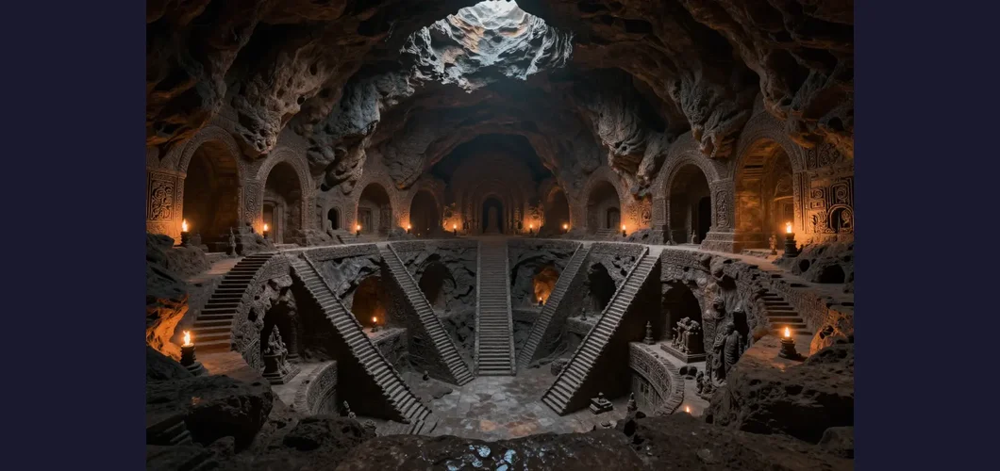

Derinkuyu Underground City: 20,000 People Lived Beneath Turkey!

In 1963, a man in the small town of Derinkuyu, in central Turkey, was fixing up his house. He knocked down a wall. Behind it he did not find another room, a cupboard, or an old cellar. He found a dark, twisting passage that went deep into the earth.
Local people tell the story this way. During the building work, a crack had opened in the ground. The man noticed that his chickens kept slipping into the crack and never came back. He wanted to know where they were going. So he looked into the crack and found the dark passage.
The passage led to the first level of an underground city. The city has 18 levels and goes down about 85 meters (279 feet). It was big enough to shelter 20,000 people. There was also room for their farm animals, food stores, wine presses, oil presses, churches, and schools.
In ancient times the city was called Elengubu. It was cut from the soft volcanic rock of a region called Cappadocia. The work went on for nearly three thousand years. One people after another used it and made it bigger: the Phrygians, the Persians, and the Christians of the Byzantine age.
The last people left in the 1920s. They were Cappadocian Greeks escaping the Greco-Turkish War. After that the city lay hidden and forgotten for decades. It sat under the houses, streets, and fields of the modern town. People walked over a whole lost world and had no idea it was there.
Derinkuyu is in Cappadocia, in central Anatolia. Anatolia is the large piece of land that makes up most of Turkey. The region is a wide, high plain, about 1,000 meters (3,300 feet) above sea level.
Cappadocia looks like nowhere else. It is famous for its cone-shaped rocks, called “fairy chimneys.” It is famous for skies full of hot air balloons. And it is famous for its underground cities, cave homes, and churches cut into the rock.
The whole region sits on thick layers of volcanic tuff. Tuff is ash that was pressed into rock. The ash came from old eruptions of nearby volcanoes, such as Mount Hasan and Mount Erciyes. This rock is soft and easy to cut when it is first uncovered. Then it slowly hardens in the air. That makes it perfect for digging rooms underground.
The people of Cappadocia used this for thousands of years. They cut homes, stables, churches, and whole cities into the rock. Today at least 36 underground cities are known in the region. Some people think there are more than 200. Many are joined by tunnels that run for miles.
In 1985, the Goreme National Park and the Rock Sites of Cappadocia became a UNESCO World Heritage Site. That title is given to places that matter to the whole world. It honors both the land and the culture of this region.
It is hard to picture how big Derinkuyu is until you stand inside it. It goes 85 meters (279 feet) below ground. That is about the height of a 25-story building. It has 18 levels of tunnels, rooms, stairs, and halls. Only 8 levels are open to visitors today.
The part that has been dug out covers about 445,000 square feet (41,350 square meters). Some sections have not been explored yet. So the real size may be much larger.
The city was planned with great skill. The upper levels held living rooms, kitchens, storerooms, and stables for animals. The middle levels held shared spaces, dining halls called refectories, wine presses, and oil presses. These show that people meant to stay a long time. It was not just a place to hide for a few days.
On the second level, researchers found a missionary school with study rooms. It seems to have classrooms and a curved ceiling shaped like half a barrel. The deepest levels that people can reach hold a church cut in the shape of a cross. There are also tombs and a huge air shaft that is the main air supply for the city.
The water system is one of the cleverest parts. The city had its own deep wells. They went down below the lowest rooms to reach the water under the ground. Enemies on the surface could not reach them. The wells were placed with care so nobody outside could poison or block them. In a war, that mattered a great deal.
The city also had many storerooms. They could hold huge amounts of dried food, grain, wine, and olive oil. That was enough to feed about 20,000 people for months.
The wine and oil presses tell us something important. This was not just a shelter for a short stay. It was a working community. People lived, worked, prayed, and taught their children down there for long periods. In times of war or persecution, they may have stayed for years. Persecution means being attacked for what you believe.
The numbers are hard to believe. The city has more than 600 known entrances, and most are hidden inside private houses on the surface. It has more than 15,000 air ducts, which are narrow channels for air. The deepest air shaft goes down 55 meters (180 feet). Great rolling stone doors close each level, and each one weighs about 500 kg (1,100 lbs).
Inside, the temperature stays at 13°C (55°F) all year. It does not change in the burning summers or the freezing winters above. A tunnel about 8–9 km (5–6 miles) long joins Derinkuyu to the nearby Kaymakli Underground City. The city opened to tourists in 1969. Now hundreds of thousands of people visit every year.
Perhaps the finest piece of engineering here is the air system. People have compared it to the heating and cooling systems of modern buildings. Think of 20,000 people and their animals shut in underground. They need a huge, steady supply of fresh air.
Without it, the bad air that people breathe out, called carbon dioxide, would build up. People would soon be unable to breathe. The fires for cooking, heat, and light would also use up the oxygen.
The builders solved the problem with more than 15,000 air ducts. These small shafts and channels were cut through the rock. They join every level of the city to the surface. The largest and most important shaft drops 55 meters (180 feet) from the surface to the deepest levels. It sends a steady flow of fresh air through the whole city.
The builders understood how air moves. Inside the city, the air was warm. People, animals, and cooking fires heated it. On the surface, the air was cooler. The shafts were placed and sized to use that difference.
Warm air rose through some shafts and left near the surface. That pulled fresh air in through other shafts and entrances lower down. So the air kept moving by itself. No fans or machines were needed. Modern architects still study this kind of natural airflow and admire it.
There was one more clever detail. Each level could be closed off without stopping the air to the rest of the city. This was important, because the stone doors were made to shut levels off during an attack. Even with a level closed, the air ducts kept working. The people defending the city could still breathe while enemies waited above.
Safety came from the great rolling stone doors. Each was a round block cut from the volcanic rock, and each weighed about 500 kg (1,100 lbs). People inside could roll a door across the way into a level and close it.
The doors were shaped like wheels. They fitted into slots cut in the walls and floor, so they rolled smoothly into place. And they could only be worked from the inside. The outer side had no handles, no grips, and no moving parts.
Once a door was in place, an attacker could hardly open it. The stone filled the whole passage, and there was nothing to hold on the outside. The doors were made to stop the usual dangers of the ancient world: armies, raiders, and people who hunted others for their religion.
Each level could be closed by itself. So even if enemies got into the upper levels, the defenders could go down and close the passages behind them. Such smart defenses would be impressive in any age. These were cut from rock more than two thousand years ago.
Who built Derinkuyu? The answer is not simple. No single people built it at one time. It was made bigger and changed over nearly three thousand years.
The first work is usually linked to the Phrygians. They were an ancient Indo-European people with a strong kingdom in central Anatolia in the 8th–7th centuries BCE. The Phrygians were among the best builders of the Iron Age, and they are known for very large building projects.
Archaeologists at the Turkish Department of Culture say the first passages at Derinkuyu were cut in this period. Archaeologists are people who study the past by digging up old things. The soft tuff could be dug out with simple tools.
But some scholars think the first levels may be older than the Phrygians. The Hittites ruled Anatolia in the 15th–12th centuries BCE, and they may have started the work. It could even have been an earlier people.
One of the oldest written reports that may describe Derinkuyu comes from a Greek historian, Xenophon of Athens. He wrote a work called Anabasis around 370 BCE. In it he said the people of Anatolia had dug their homes under the ground. The homes were big enough for a family, their animals, and their stored food.
In the centuries after that, new groups of people made the city larger. It reached its greatest size in the Byzantine period, from the 5th to the 10th centuries CE. Christians used it as a hiding place when they were in danger. First they hid from the Romans, who punished early Christians. Later they hid from Arab raids that swept through Anatolia in the 7th–10th centuries.
The cross-shaped church on the deepest open level dates from this time. So do the missionary school on the second level and many of the storerooms.
Local people still used the city in the early 20th century. Cappadocian Greeks sheltered in the tunnels during the troubles of the Greco-Turkish War, from 1919 to 1922. The end came in the 1920s. Under the 1923 population exchange between Greece and Turkey, the Cappadocian Greeks were forced to leave Turkey. Derinkuyu was empty for the first time in thousands of years.
Derinkuyu did not stand alone. It was part of a huge underground network that spreads across Cappadocia. The tunnel to Kaymakli, about 8–9 km (5–6 miles) long, is wide enough to walk through. But it is narrow enough to defend easily against anyone chasing you.
The tunnel meant that people could escape from one city to the other if their own city fell. Communities in different cities could also send messages and help each other during a long siege. A siege is when an enemy surrounds a place and waits.
The wider network has at least 36 known underground cities, and some people put the number above 200. Some are small shelters with one level. Others are huge, with many levels, like Derinkuyu and Kaymakli.
In 2014, Turkish archaeologists announced a new find. They had discovered an unknown underground city near the city of Nevsehir. It is believed to be even bigger than Derinkuyu. Early estimates say it may hold as much as 5 million square feet of space. It may go as deep as Derinkuyu, or deeper.
If that is confirmed, the Nevsehir site would be the largest known underground city in the world. It would also mean that much of the Cappadocian network is still waiting to be found.
Derinkuyu was not a rough cave. It was a complete community under the ground. Wine presses were cut into the rock floor, so people made wine down there. They probably grew the grapes on the surface in safe times and carried them below. Olive oil presses did the same job for oil.
Stables on several levels held cattle, sheep, and goats. The animals gave meat, milk, and wool. The school on the second level, with its study rooms and curved ceiling, suggests that children kept learning during long stays below. The cross-shaped church on the deepest open level gave people a place to pray.
The steady 13°C (55°F) was better than life on the surface in some ways. Food stored underground went bad more slowly. People were also safe from the wild weather of the Anatolian plain. Up there, summer can be hotter than 35°C (95°F), and winter can fall far below freezing.
Derinkuyu is still one of the most surprising ancient places on Earth. People lived in it, made it bigger, and improved it for nearly three thousand years. That story runs from the Phrygians through the Byzantine age to the early 20th century.
Its 18 levels go 85 meters below ground. It had its own air, water, food stores, churches, schools, and defenses. All of it was cut from soft volcanic rock with simple tools.
Derinkuyu was found in 1963. After that, people learned that all of Cappadocia is full of underground cities joined by miles of tunnels. This changed what we think ancient people could do. These were carefully planned towns. Their builders understood rules of engineering that nobody would write down for centuries.
The city stayed hidden under a modern town for decades. Then a man knocked down a wall and found it by accident. That leaves us with one question. What else lies under our feet, still waiting to be found?
References & Further Reading
Editorial note: Derinkuyu is documented through archaeological research, the Turkish Department of Culture, UNESCO World Heritage records, and historical accounts including Xenophon’s Anabasis. See our Editorial Policy.